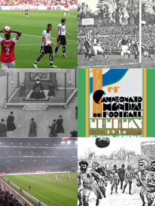
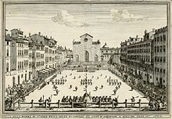
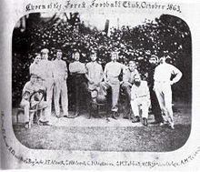
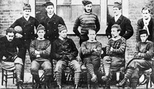

Le Meilleur du Football



L'histoire du football rend compte de la naissance et de
l'évolution du football, un sport collectif né au milieu du
XIXe siècle en Grande-Bretagne et devenu au siècle suivant
le plus populaire au monde.
Les racines que ce sport partage avec d'autres jeux de
« football » remontent au Moyen Âge. Il est l'héritier de la
soule médiévale, pratiquée notamment dans le Nord-Ouest de la
France et dans les Îles Britanniques, et du Calcio florentin,
des jeux caractérisés par leur violence et leur peu de règles.
Au début du XIXe siècle, les écoles anglaises intègrent
progressivement le sport à leur cursus et impulsent sa
formalisation. Les règles de Cambridge sont en octobre 1848
une première tentative d'unification des règles du football.
Les premiers clubs indépendants apparaissent à la fin des
années 1800 ; en 1863, onze d'entre eux fondent The Football
Association, chargée d'organiser la pratique du football en
Angleterre. Elle publie peu après les premières « Lois du jeu »
(en anglais : Laws of the Game), largement inspirées par
celles de Cambridge.
En 1855, des joueurs du Sheffield Cricket Club soucieux de
pratiquer du sport pendant l'hiver imaginent leurs propres
règles de football. En 1857, la ville voit naître le premier
club de football non scolaire : le Sheffield Football Club,
qui publie ses règles de jeu à l'issue de sa première
assemblée générale le 21 octobre 1858. Ces règles se
diffusent alors vite dans les régions du Nord et des Midlands.
Le Sheffield FC dispute le premier match interclubs face au
Hallam FC (fondé en 1860) le 26 décembre 1860, à seize contre
seize. Ces deux clubs pionniers se retrouvent en décembre
1862 pour le premier match de charité.

La Fédération anglaise de football (The Football Association)
est créée le 26 octobre 1863. Son premier objectif est
d'unifier le règlement. Ses règles interdisent notamment de
donner des coups de pied aux joueurs et de porter le ballon
avec les mains. Le match opposant Londres à Sheffield en 1866
marque un tournant : c'est la première rencontre dont la durée
est fixée préalablement à 90 minutes.
La Youdan Cup est la première compétition. Elle se tient en
1867 à Sheffield et Hallam FC remporte le trophée le 5 mars.
La première épreuve à caractère national est la FA Challenge
Cup 1872. Neuf ans après la mise en place de règles officielles,
en 1863, la taille et le poids du ballon sont normalisés.
Jusqu'alors, ces détails faisaient l'objet d'un accord entre
les parties concernées lors de la préparation de la rencontre.
Concernant le jeu, le passage du dribbling game au passing game
est une évolution importante. À l'origine, le football est
très individualiste : les joueurs, tous attaquants, se ruent
vers le but balle au pied, c'est-à-dire en enchaînant les
dribbles. C'est le dribbling. Comme Michel Platini aime à le
rappeler, « le ballon ira toujours plus vite que le joueur ».
C'est sur ce principe simple qu'est construit le passing game.
Cette innovation apparaît à la fin des années 1860 et s'impose
dans les années 1880. Dès la fin des années 1860, des matches
entre Londres et Sheffield auraient introduit le passing au
Nord. C'est la version de Charles Alcock, qui situe en 1883
la première vraie démonstration de passing à Londres par le
Blackburn Olympic. Entre ces deux dates, la nouvelle façon
de jouer trouve refuge en Écosse.

Le professionnalisme est autorisé en 1885 et le premier
championnat se dispute en 1888-1889. La Fédération anglaise
tient un rôle prépondérant dans cette évolution, imposant
notamment un règlement unique en créant la FA Cup, puis les
clubs prennent l'ascendant. La création du championnat
(League) n'est pas le fait de la Fédération mais une initiative
des clubs cherchant à présenter un calendrier stable et
cohérent. L'existence d'un réseau ferroviaire rend possible
cette évolution initiée par William McGregor, président
d'Aston Villa. Ce premier championnat est professionnel,
et aucun club du Sud du pays n'y participe.
L'Angleterre est alors coupée en deux : le Nord acceptant
pleinement le professionnalisme et le Sud le rejetant.
Cette différence a des explications sociales. Le Sud de
l'Angleterre est dominé par l'esprit classique des clubs
sportifs réservés à une élite sociale. Dans le Nord dominé
par l'industrie, le football professionnel est dirigé par
des grands patrons n'hésitant pas à rémunérer leurs joueurs
pour renforcer leur équipe, de la même façon qu'ils recrutent
de meilleurs ingénieurs pour renforcer leurs entreprises.
Pendant cinq saisons, le championnat se limite aux seuls clubs
du Nord. Le club londonien d'Arsenal passe professionnel en
1891. La ligue de Londres exclut alors de ses compétitions
les Gunners d'Arsenal qui rejoignent la League en 1893.
La Southern League est créée en réaction en 1894. Cette
compétition s'ouvre progressivement au professionnalisme mais
ne peut pas éviter les départs de nombreux clubs vers la
League. Les meilleurs clubs encore en Southern League sont
incorporés à la League en 1920.

Sur le modèle de la Football Association, des fédérations
nationales sont fondées en Écosse (1873), au Pays de Galles
(1876) et en Irlande (1880). Des rencontres opposant les
sélections des meilleurs joueurs de ces fédérations ont lieu
dès le 30 novembre 1872 (Écosse-Angleterre), soit quelques
mois avant la fondation officielle de la Fédération écossaise.
L'International Football Association Board (IFAB), instance
chargée de déterminer et faire évoluer les règles du football,
est créée en 1882 par les quatre fédérations. Il est ainsi
convenu de règles communes appliquées dans tous les pays
pratiquant le football. Les matches annuels mettant aux prises
ces différentes sélections se transforment à partir de 1884
en une première compétition internationale : le British Home
Championship.
En pratiquant le passing plutôt que le dribbling, les Écossais
dominent les premières éditions.